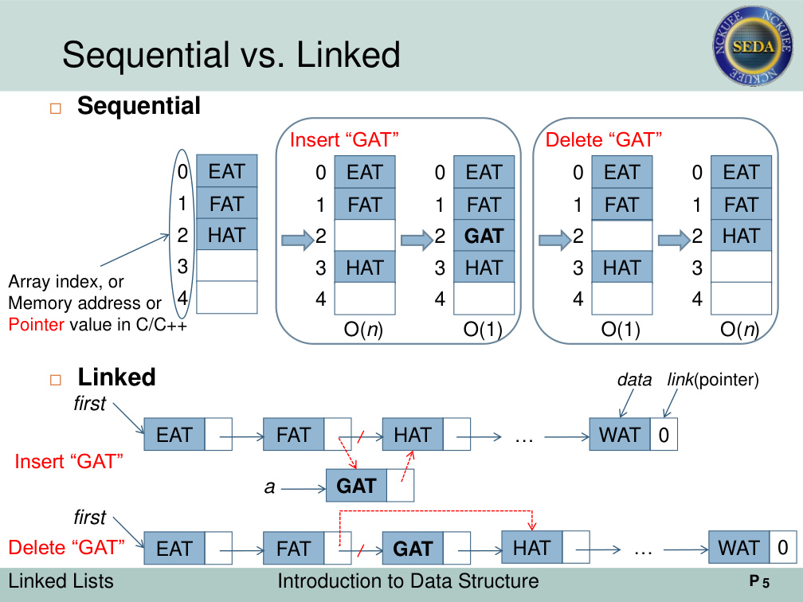

Chapter 4 Linked Lists
串列、指標、Iterator、Circular List、Doubly Linked List
- 從 Array 與 Linked List 的差異開始，說明為什麼中間插入、刪除時，串列可以透過修改 pointer 避免大量搬移資料。
- 完整整理 singly linked list、chain class、friend class、template、iterator、InsertBack、Concatenate、Reverse 等操作。
- 包含 Circular List、Header Node、Linked Stack、Linked Queue、Available Space List、多項式加法、Sparse Matrix、Doubly Linked List。
Singly Linked ListCircular ListIteratorPolynomialSparse MatrixDoubly Linked List
進入章節主頁